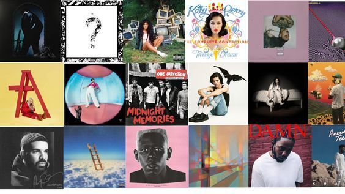
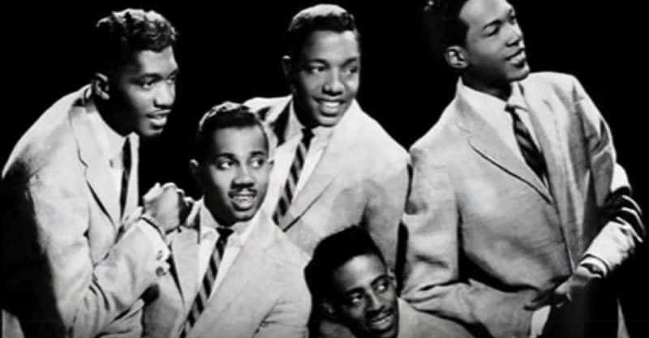

WHAT IS R&B?

Rhythm and blues (R&B) music is known for its roots, in blues and jazz well as its incorporation of horn instruments and piano. Throughout its evolution R&B has encompassed a range of styles and sounds. Some common categories within the R&B genre include R&B, Motown, soul, funk and contemporary R&B.
HISTORY

Originating in American communities during the 1940s R&B emerged as a popular music genre. Record companies initially used the term to describe recordings that were primarily marketed to African Americans. It was during this time that "urbane, rocking, jazz based music..., with an persistent beat" gained increasing popularity.